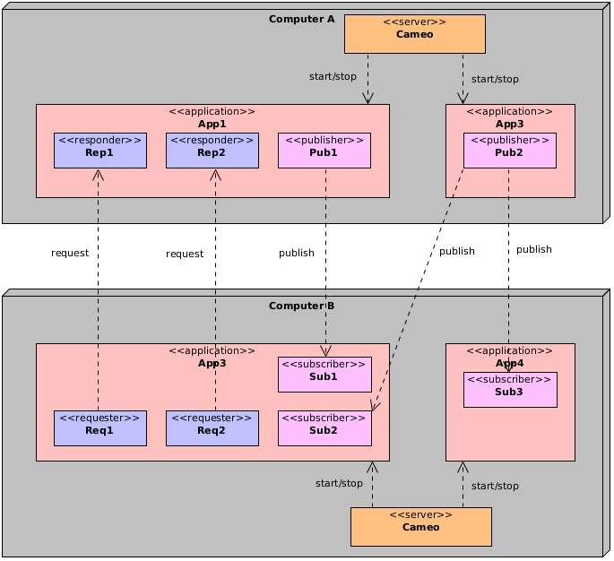
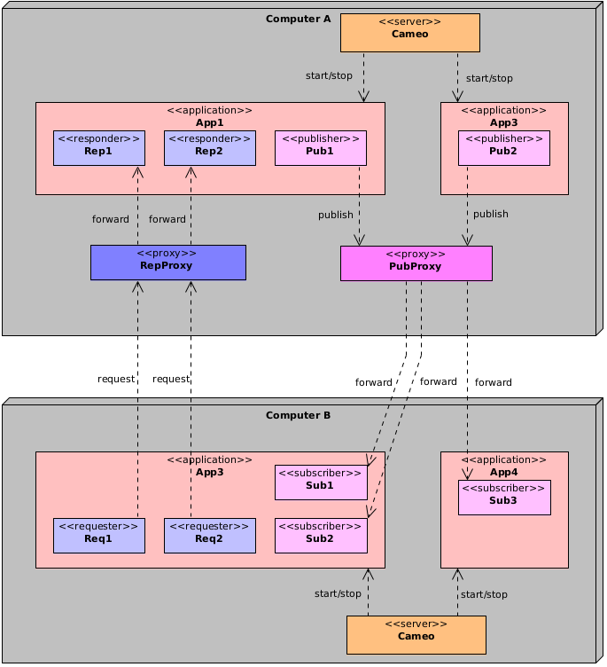
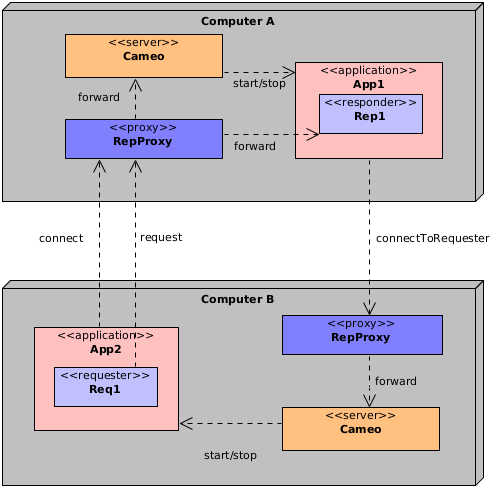

Use the proxies with a firewall
In the context of a firewall, you may run the CAMEO server with proxies so that the number of exposed ports is fixed.
Open ports
CAMEO communication is based on ZeroMQ for which main sockets own a port. For instance you open a REP or a PUB socket by opening a new port. CAMEO communication objects Responder and Publisher have between one and two ports opened dynamically. Moreover the CAMEO server itself opens some ports. As a consequence, the number of ports used by a CAMEO application can increase rapidly.
The following diagram is showing two apps communicating with some Requester/Responder and Publisher/Subscriber objects:

There is at least five open ports that must be accessible from the computer B. Moreover as they are dynamically opened, they may not always have the same value. In the context of a firewall which needs to minimize the number of ports accessible from outside, this is not suitable.
The solution is to use proxies.
Use of proxies
Using proxies allows to forward messages. There is a responder proxy which is a relay between the Requester and the Responder objects. There is also a publisher proxy which is a relay between the Subscriber and the Publisher objects.
The proxies are launched by the CAMEO server. You simply have to specify which ports they will use. For instance you can specify in the configuration file:
The first port 10000 is the port of the responder proxy. The second port 10001 is the port of the publisher proxy. The third port is for internal use.The following diagram is now showing the same apps with the responder and publisher proxies configured on the computer A:

The applications on computer B access the responders and publishers through the proxies. However passing through the proxies is not automatically done. It must be specified at the creation of the CAMEO server object referencing the server of the computer A.
If you were not using the proxies, the creation would have been in C++ for App3:
The port is the base port of the CAMEO server.However the C++ creation of the CAMEO server with proxies:
In Java:The first argument of Server::create() is the responder proxy endpoint and the second argument is the integer telling that this is the proxy port.
Once the server is created, the definition of a Requester or Subscriber is exactly the same as before.
Proxy path
Currently, the proxy programs are written in C++. When the CAMEO server starts, it tries to launch the proxy programs. However if they are not installed in a standard path, they may not be found. In that case, an argument is provided:
List of functions or methods using the proxies
Here is the list of functions or methods that can be parameterized with a proxy:
| Class | Function/Method |
|---|---|
| Server | create() |
| This | connectToStarter() |
| basic::Request | connectToRequester() |
| multi::Request | connectToRequester() |
If the a server has been created with a proxy then the App objects that it returns will also use the proxy.
Notice that it is possible that each computer has a CAMEO proxy and two remote apps use them to communicate. Look at the following example:

App2 on the computer B is connecting to App1 on computer A. For that the CAMEO server representing A on B is created with a proxy. A message is sent to the proxy of A that forwards it to the CAMEO server.
Then App2 requests App1 using the proxy automatically. This time when App1 receives a request it connects to the requester. For that it is using the proxy meaning that it sends a message to the proxy of B that is forwarded to App2.